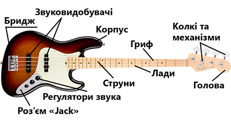

____ Історія винекнення ____
Бас-гітара відносно молодий інструмент. У 1951 році американський винахідник Лео Фендер, засновник фірми "Фендер", випустив бас-гітару "Пресижн" (Fender Precision Bass), розроблений на основі його електрогітари "Телекастер". інструмент отримав визнання і швидко завоював популярність. Ідеї, закладені у його конструкцію стали фактичним стандартом для інших фірм що вироблятимуть бас-гітари.
С тих пір з'явилось безліч різновидів бас-гітар, відрізняючись одна від одної формою корпуса, діапазоном, мензурою, кількістю струн та звуковидобувачів, механізмом кріплення та настройки струн, електричною будовою тембр-блока, присутністю та відсутністю ладів а також цілим рядом інших менш вагомих конструктивних особливостей.
____ Будова бас-гітари _____
Загальний вид бас-гітари зображений на малюнку:
Основною частиною бас-гітари є корпус. На ньому встановлюється пристрій крцплення нижніх кінців струн - бридж, та механізм тонкого регулювання мензури кожної струни. Як правило тут же знаходяться регулюючі венти що дозволяють змінювати висоту струн над грифом. Під струнами, у поглибленнях в корпусі кріпляться звуковидобувачі (датчики) - перетворювачі звука на електросигнали. На корпусі також знаходяться регулятори (потенциометри) гучності і тембра, а також є роз'єм "Джек" для під'еднання бас-гітари до звукопідсилювальної апаратури за допомогою кабелю. Сам тембр-блок розміщуеться у спеціальній порожнині в корпусі бас-гітари.Часто там також присутня схема попереднього підсилення звуку з елементом живлення, у такому випадку кажуть, що інструмент активний.
Гриф бас-гітари жорстко кріпиться до корпусу та має всередені себе анкер - металичний стержень, обертаючий який в ту чи іншу сторону спеціальним ключем можна регулювати прогин грифа. Зі сторони струн гриф поділенний на лади спеціальними металичними планками, котрі ще звуть порожками.
Гриф закінчуеться головою, на котрій знаходяться колкові механізми, що служать для кріплення верхніх кінців струн, а також для їх налаштування.
Великий вплив на звук інструменту мають струни.
-
товщина
- тонкі
- середні
- товсті
-
матеріал обмотки
- нікель
- сталь
- мідь
-
тип обмотки
- кругла
- плоска
- полукругла